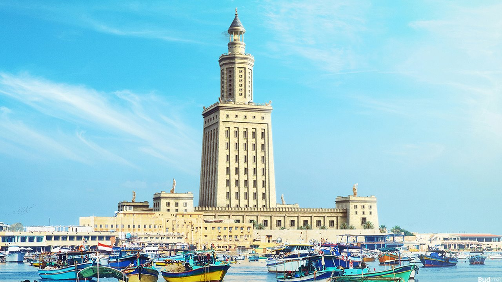

Descripcion del pais

Egipto, oficialmente la República Árabe de Egipto, es un país transcontinental situado principalmente en el noreste de África y el suroeste de Asia a través de la península del Sinaí. Su capital y ciudad más grande es El Cairo, una metrópolis que se extiende a lo largo del río Nilo. Egipto es conocido por su antigua civilización, con monumentos icónicos como las Pirámides de Giza, la Esfinge y los templos de Luxor. La historia faraónica de Egipto, sus intrincados jeroglíficos y sus contribuciones al arte y la ciencia lo han convertido en uno de los destinos turísticos más atractivos del mundo. El árabe es el idioma oficial, y el islam es la religión predominante. Egipto tiene una rica herencia cultural que refleja su papel como cruce de caminos entre África, Asia y Europa.
5 lugares para ir de vacaciones
1. El cairo
El Cairo, la capital de Egipto, es una ciudad vibrante y caótica conocida por su rico patrimonio histórico. Los visitantes pueden explorar el Museo Egipcio, hogar de la mayor colección de antigüedades faraónicas del mundo, incluida la máscara dorada de Tutankamón. El barrio copto ofrece una visión de la antigua comunidad cristiana de Egipto, mientras que el bazar de Khan el-Khalili es ideal para comprar recuerdos y artesanías. La Gran Pirámide de Giza y la Esfinge están a poca distancia en coche, ofreciendo una experiencia inolvidable.
2. Luxor
Luxor es conocida como el mayor museo al aire libre del mundo debido a su abundancia de templos y tumbas antiguas. El Templo de Luxor y el Templo de Karnak son impresionantes ejemplos de la arquitectura egipcia antigua. En la orilla oeste del Nilo, el Valle de los Reyes alberga las tumbas de los faraones, incluido Tutankamón. Las vistas de la ribera del Nilo al atardecer y los paseos en faluca son experiencias que no se deben perder.
3. Asuán
Asuán es una ciudad tranquila situada a lo largo del Nilo, conocida por su ambiente relajado y su belleza natural. Los visitantes pueden explorar la Isla Elefantina, el Templo de Filae y la Presa Alta de Asuán. El cercano Abu Simbel, con sus monumentales templos tallados en roca, es una excursión popular. Los mercados de Asuán ofrecen productos locales y especias, y un crucero por el Nilo desde Asuán hasta Luxor es una forma popular de disfrutar del paisaje.
4. Alejandría
Alejandría, fundada por Alejandro Magno, es una ciudad con una rica historia mediterránea. Entre los principales puntos de interés se encuentran la Biblioteca de Alejandría, una moderna reconstrucción de la antigua biblioteca, y el Museo Nacional de Alejandría. La ciudad también alberga el antiguo teatro romano y las Catacumbas de Kom el Shoqafa. El paseo marítimo Corniche ofrece vistas al mar Mediterráneo y es ideal para paseos tranquilos.
5. Sharm el-Sheikh

Sharm el-Sheikh es un destino turístico en la península del Sinaí, famoso por sus playas de arena blanca, aguas cristalinas y arrecifes de coral. Es un paraíso para los buceadores y practicantes de snorkel, con sitios de buceo de renombre mundial como el Parque Nacional Ras Muhammad. La ciudad también ofrece resorts de lujo, animada vida nocturna y actividades como safaris en el desierto y paseos en camello. El clima cálido durante todo el año hace de Sharm el-Sheikh un destino ideal para vacaciones de playa.
Datos curiosos
1. La Gran Pirámide de Giza

Etiopía utiliza un calendario único que tiene 13 meses: 12 meses de 30 días y un mes adicional llamado Pagumē, que tiene cinco o seis días dependiendo de si el año es bisiesto. El calendario etíope está aproximadamente siete a ocho años detrás del calendario gregoriano, lo que significa que cuando es 2024 en el resto del mundo, en Etiopía es 2016 o 2017.
2. El río Nilo

El río Nilo es el río más largo del mundo, extendiéndose aproximadamente 6.650 kilómetros. Ha sido la savia de Egipto desde tiempos antiguos, proporcionando agua, transporte y fértil limo para la agricultura. La frase "Egipto es un don del Nilo" acuñada por el historiador griego Heródoto refleja la importancia vital del río para la supervivencia y el desarrollo de la civilización egipcia.
3. La Piedra Rosetta
La Piedra Rosetta, descubierta en 1799, fue la clave para descifrar los jeroglíficos egipcios. Este artefacto de granito presenta el mismo texto en tres escrituras diferentes: jeroglífico, demótico y griego antiguo. Fue gracias a la Piedra Rosetta que el erudito francés Jean-François Champollion pudo descifrar el sistema de escritura jeroglífico en 1822, lo que permitió a los arqueólogos y historiadores entender mejor la antigua civilización egipcia.
Quiz
¡Prueba tus conocimientos con este Quiz!
Gracias por participar
Tu puntaje fue: